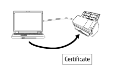
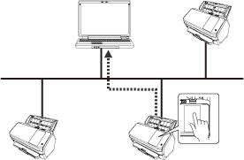

Overview
Network Setup Tool for fi Series is an application that is used to connect an fi Series image scanner to a network to make the scanner available.
Network Setup Tool for fi Series comes with the following tools.
The supported scanner models vary depending on the tool that is used for the model. Check that the name of your scanner model that you are using is one of the names of the scanner models that are supported by each tool in advance. For details about scanner models supported by each tool, refer to Supported Scanner Models.
Scanner Selection Tool
This tool is for selecting a scanner that you want to use from a computer.
You can select a single scanner among scanners connected to a network.
When you select fi-8950, fi-8930, fi-8820, fi-8040, fi-8190, fi-8290, fi-8170, fi-8270, fi-8150, or fi-8250, you can also perform the following operations.
Start up fi Series Network Settings (on a web browser) from the [Scanner Selection Tool] window to configure the scanner settings
Start up Software Operation Panel from your computer to configure the scanner settings
For details about fi Series Network Settings (on a web browser) and Software Operation Panel, refer to the Operator's Guide of the scanner.

IP Address Setting Tool
This tool is for setting an IP address, scanner name, security related information, and other network information.
Certificate Registration Tool
This is a tool to register a certificate on a scanner to connect the scanner to a network that requires a certificate via Wi-Fi.
After registering a certificate on the scanner, configure the Wi-Fi settings on the touch screen of the scanner.
Certificates that can be registered are as follows:
Client certificate: PKCS#12 format file (*.p12, *.pfx)
CA certificate: CA certificate file (*.cer, *.crt, *.der, *.pem)

Button Event Manager
This is a tool to specify an image scanning application that you want to start up when a button on a scanner is pressed.
You need to use Scanner Selection Tool to set a scanner connected to a network to be able to use it on a computer.
